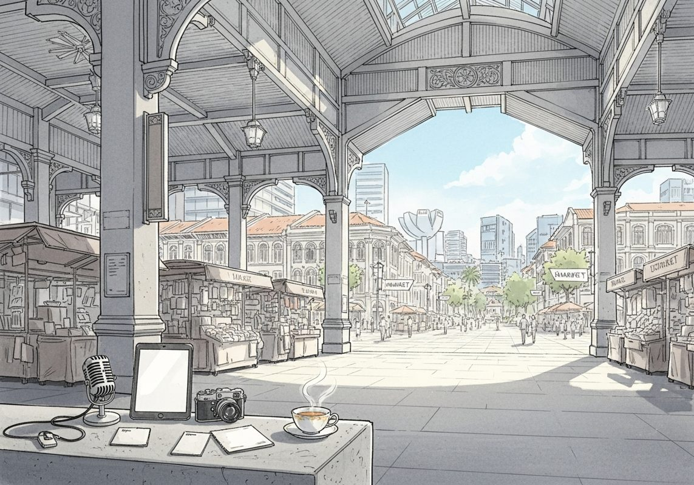

7/5

???? 2026-07-05
?????????????
今日社媒观点
- **Guillermo Rauch**: 🏁 I animated the token 💰 spend race, from ~lifetime Vercel AI Gateway usage, which aggregates trillions of tokens from millions of developers a month. Fascinating to see the fluctuations among the labs, Anthropic's domi... ([原文](https://x.com/rauchg/status/2073563586270781674))
- **Guillermo Rauch**: Agentic self-improvement. Give your agent the ability to introspect its past runs, spot inefficiencies, errors, redundant tool calls, and produce new prompts and skills. That’s why agent observability is built-in when y... ([原文](https://x.com/rauchg/status/2073132174958841887))
- **Andrej Karpathy**: Agree, it's beautiful, top tier fablemaxxing! :) I think with every new model tier there is something new that qualitatively leaps and surprises, for Fable so far these threejs envs seem to be up there. The bear thing i... ([原文](https://x.com/karpathy/status/2073505440479293773))
- **Guillermo Rauch**: Agent Runs are now available on MCP and CLI. @evedev_ traces are automatically ingested and made available to agents. Run 𝚟𝚌 𝚊𝚐𝚎𝚗𝚝-𝚛𝚞𝚗𝚜 --𝚑𝚎𝚕𝚙 or learn more ↓ https://t.co/YxGxXTxPO1 ([原文](https://x.com/vercel_dev/status/2073129220377849968))
- **Jason Lemkin**: Time to stop vibe coding for the day! https://t.co/YYhaSQjKkY ([原文](https://x.com/jasonlk/status/2073530509905584595))
- **Bill Gurley**: @nix_eth @grok isn’t this intentionally understating the total safety/security advantages of open-weight models? Please list all the advantages for companies vs closed hosted models. ([原文](https://x.com/bgurley/status/2073074754630881533))
- **Jason Lemkin**: "Want to be great at sales in the Age of AI? It's not enough to just be a 'people person' anymore. You have to be a true expert in the agent and the product. Customers need sales execs to be mini-FDEs. Or they don't pro... ([原文](https://x.com/jasonlk/status/2073513680893800895))
- **Jason Lemkin**: Once you're in production, sometimes 20% of the job of your FDE is Therapist That probably used to be true of CSMs, too Until they became agents of endless upsells ([原文](https://x.com/jasonlk/status/2073571813817229780))
今日论文雷达
- **Distributed Attacks in Persistent-State AI Control** - Josh Hills, Ida Caspary, Asa Cooper Stickland
As AI coding agents become more autonomous, they increasingly ship code iteratively, with the codebase persisting across sessions. ([arXiv](https://arxiv.org/abs/2607.02514v1))
- **LACUNA: A Testbed for Evaluating Localization Precision for LLM Unlearning** - Matteo Boglioni, Thibault Rousset, Siva Reddy
LLMs memorize sensitive training data, including personally identifiable information (PII), creating a pressing need for reliable post hoc removal methods. ([arXiv](https://arxiv.org/abs/2607.02513v1))
- **Program-as-Weights: A Programming Paradigm for Fuzzy Functions** - Wentao Zhang, Liliana Hotsko, Woojeong Kim
Many everyday programming tasks resist clean rule-based implementation, such as alerting on important log lines, repairing malformed JSON, or ranking search results by intent, and are increasingly outsourced to large la... ([arXiv](https://arxiv.org/abs/2607.02512v1))
- **Online Safety Monitoring for LLMs** - Mona Schirmer, Metod Jazbec, Alexander Timans
Despite alignment training, LLMs remain prone to generating unsafe outputs at deployment time. ([arXiv](https://arxiv.org/abs/2607.02510v1))
- **ReContext: Recursive Evidence Replay as LLM Harness for Long-Context Reasoning** - Yanjun Zhao, Ruizhong Qiu, Tianxin Wei
Understanding and reasoning over long contexts has become a key requirement for deploying large language models (LLMs) in realistic applications. ([arXiv](https://arxiv.org/abs/2607.02509v1))
- **What LLM Agents Say When No One Is Watching: Social Structure and Latent Objective Emergence in Multi-Agent Debates** - Arman Ghaffarizadeh, Danyal Mohaddes, Aliakbar Izadkhah
LLM agents will increasingly act in socially structured settings where role, audience, and relational context can shape what is advantageous or costly to say. ([arXiv](https://arxiv.org/abs/2607.02507v1))
- **Reasoning LLM Improves Speaker Recognition in Long-form TV Dramas** - Yuxuan Li, Lingxi Xie, Xinyue Huo
Long-form TV dramas present a formidable challenge for comprehensive video understanding, where deciphering complex storyline often relies on \textbf{speaker recognition}, the task of accurately attributing each spoken.... ([arXiv](https://arxiv.org/abs/2607.02504v1))
- **DemoPSD: Disagreement-Modulated Policy Self-Distillation** - Yunhe Li, Hao Shi, Wenhao Liu
On-policy self-distillation (OPSD) has emerged as a practical method for training large language models (LLMs) to reason, where a single model acts as both the teacher and the student with different levels of informatio... ([arXiv](https://arxiv.org/abs/2607.02502v1))
信号抓取备注
- No arXiv papers matched the lookback window; used latest relevant papers instead.